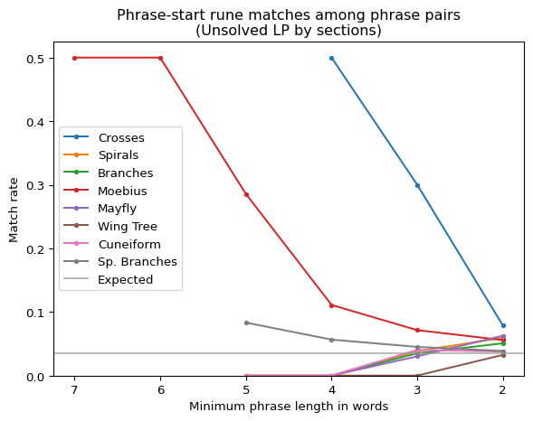
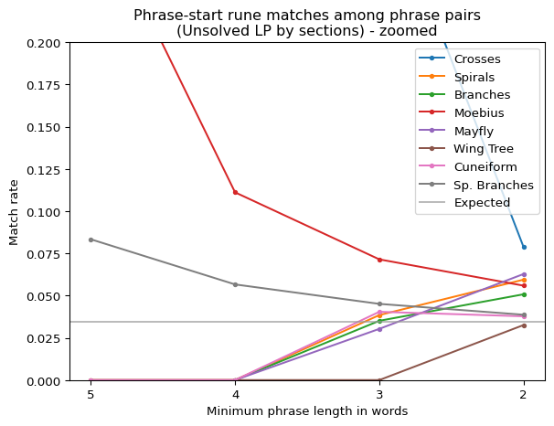
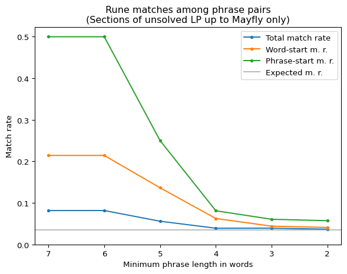

import pandas as pdimport numpy as npimport matplotlib.pyplot as pltimport syssys.path.append('..')from cryptext.cicada import liberprimus as lp, gematriaprimus as gp, futhorcfrom cryptext.analytics import ioc, expected_ioc, diff_text, crosstext_iocfrom helperfunctions import find_phrase_groups, find_phrase_groups_strict, count_rune_matches
From the last document, I have a solid reason to believe that the first letter in each word (at least in similar phrases by length) has a higher than usual chance to encrypt into the same letter. However, this still gives almost no clues to the actual mechanism behind the encryption, so let’s try to find more order in the ciphertext here. In particular, I would like to test a hypothesis that part of the encryption relies on previous letters of plaintext (a property which I call an “autokey component”).
Distilled Data
Since the increased word-start match rate was established as unlikely to be caused by random chance, a good next step could be to try to exaggerate it by “distilling” the data to get as large dataset of good data for analysis as possible. Straight-out cherry-picking is likely a bad idea, but a selection of good candidate sections as well as a slight adjustment of parameters sounds reasonable.
Chosen target phrase groups and their rune matches
Section
Min phrase
Distinctive word len.
Phrase pairs
Match rate
Word-start m.r.
0
Crosses
3 words
5 runes
10
7/142 (= 1/20.3)
3/32 (= 1/10.7)
1
Moebius
4 words
5 runes
18
15/314 (= 1/20.9)
7/83 (= 1/11.9)
2
Sp. Branches
5 words
6 runes
8
11/153 (= 1/13.9)
4/40 (= 1/10.0)
Testing the Hypothesis
To test the hypothesis, let’s compare the probabilities that the phrase pairs match not just at the beginning of words, but at the beginning of whole phrases, as well as the first letters of last words in the phrases.
Assuming the unsolved text has an autokey component, the matches should be lower at the start, and only increase in frequency deeper into the phrase (i.e. the 2nd or 3rd word); similarly, the last word match rate should be higher, since the letters before should be the same at that point. If the cipher does not have an autokey component, we should expect the same match rates as for all word beginnings, or maybe a little lower, if the plaintext under the cipher does not match for the entire phrase pair. However…
Match rates of first letters of first and last words of the chosen phrase groups
Total w.s. m.r.
Phrase-start m.r.
Phrase-last-word-start m.r.
0
14/155 (= 1/11.1)
6/36 (= 1/6.0)
1/36 (= 1/36.0)
The fact that the first word of the phrase is more likely to match than the others is… not what I expected. The only explanation I can think of is that, if the the autokey component exists, then the letter dependency is directed in the opposite direction, or in other words, the encryption is done backwards from the last word to the first.
Applying the Updated Hypothesis to the Unsolved LP
Here is a table and a chart of phrase-start match-rates by sections:
Rune matches in same-length phrases (Unsolved LP by sections)
Section
Min phrase
Phrase pairs
Match rate
Word-start m.r.
Phrase-start m.r.
0
Crosses
5 words
0
0/0
0/0
0/0
1
Crosses
4 words
2
1/36 (= 1/36.0)
1/8 (= 1/8.0)
1/2 (= 1/2.0)
2
Crosses
3 words
10
7/142 (= 1/20.3)
3/32 (= 1/10.7)
3/10 (= 1/3.3)
3
Crosses
2 words
89
38/917 (= 1/24.1)
7/190 (= 1/27.1)
7/89 (= 1/12.7)
4
Spirals
5 words
1
0/20
0/5
0/1
5
Spirals
4 words
8
4/143 (= 1/35.8)
1/33 (= 1/33.0)
0/8
6
Spirals
3 words
52
25/723 (= 1/28.9)
6/165 (= 1/27.5)
2/52 (= 1/26.0)
7
Spirals
2 words
286
120/2992 (= 1/24.9)
31/633 (= 1/20.4)
17/286 (= 1/16.8)
8
Branches
5 words
0
0/0
0/0
0/0
9
Branches
4 words
5
2/80 (= 1/40.0)
1/20 (= 1/20.0)
0/5
10
Branches
3 words
57
21/767 (= 1/36.5)
4/176 (= 1/44.0)
2/57 (= 1/28.5)
11
Branches
2 words
453
150/4594 (= 1/30.6)
35/968 (= 1/27.7)
23/453 (= 1/19.7)
12
Moebius
5 words
7
9/141 (= 1/15.7)
6/39 (= 1/6.5)
2/7 (= 1/3.5)
13
Moebius
4 words
18
15/314 (= 1/20.9)
7/83 (= 1/11.9)
2/18 (= 1/9.0)
14
Moebius
3 words
112
65/1499 (= 1/23.1)
20/365 (= 1/18.2)
8/112 (= 1/14.0)
15
Moebius
2 words
698
252/6934 (= 1/27.5)
62/1537 (= 1/24.8)
39/698 (= 1/17.9)
16
Mayfly
5 words
0
0/0
0/0
0/0
17
Mayfly
4 words
4
3/67 (= 1/22.3)
0/16
0/4
18
Mayfly
3 words
33
23/465 (= 1/20.2)
4/103 (= 1/25.8)
1/33 (= 1/33.0)
19
Mayfly
2 words
223
91/2301 (= 1/25.3)
21/483 (= 1/23.0)
14/223 (= 1/15.9)
20
Wing Tree
5 words
1
0/16
0/5
0/1
21
Wing Tree
4 words
8
6/132 (= 1/22.0)
2/33 (= 1/16.5)
0/8
22
Wing Tree
3 words
51
14/703 (= 1/50.2)
2/162 (= 1/81.0)
0/51
23
Wing Tree
2 words
399
116/4065 (= 1/35.0)
26/858 (= 1/33.0)
13/399 (= 1/30.7)
24
Cuneiform
5 words
1
0/17
0/5
0/1
25
Cuneiform
4 words
10
6/164 (= 1/27.3)
1/41 (= 1/41.0)
0/10
26
Cuneiform
3 words
99
52/1296 (= 1/24.9)
13/308 (= 1/23.7)
4/99 (= 1/24.8)
27
Cuneiform
2 words
636
232/6221 (= 1/26.8)
57/1382 (= 1/24.2)
24/636 (= 1/26.5)
28
Sp. Branches
5 words
12
13/225 (= 1/17.3)
5/60 (= 1/12.0)
1/12 (= 1/12.0)
29
Sp. Branches
4 words
53
40/891 (= 1/22.3)
12/224 (= 1/18.7)
3/53 (= 1/17.7)
30
Sp. Branches
3 words
377
206/5104 (= 1/24.8)
53/1196 (= 1/22.6)
17/377 (= 1/22.2)
31
Sp. Branches
2 words
2380
912/24351 (= 1/26.7)
200/5202 (= 1/26.0)
92/2380 (= 1/25.9)
32
The Loss Of Divinity
5 words
2
43/51 (= 1/1.2)
13/15 (= 1/1.2)
1/2 (= 1/2.0)
33
The Loss Of Divinity
4 words
5
86/100 (= 1/1.2)
23/27 (= 1/1.2)
4/5 (= 1/1.2)
34
The Loss Of Divinity
3 words
29
170/397 (= 1/2.3)
45/99 (= 1/2.2)
13/29 (= 1/2.2)
35
The Loss Of Divinity
2 words
113
359/1125 (= 1/3.1)
93/267 (= 1/2.9)
39/113 (= 1/2.9)
Code
fig_title ='Phrase-start rune matches among phrase pairs\n(Unsolved LP by sections)'fig, ax = plt.subplots()X = [7,6,5,4,3,2]for section in lp.load_unsolved().sections(): Yphrase = []for min_phrase_length in X: stats = count_rune_matches(find_phrase_groups(section, min_phrase_length)) p,a,m,wa,wm,pm = stats.pairs, stats.runes, stats.rune_matches, stats.words, stats.word_begin_matches, stats.first_word_nth_rune_matches[0] Yphrase.append(pm / p if p >0elseNone) ax.plot(X, Yphrase, label=section.name().replace('Spiral ', 'Sp. '), marker='.')ax.axhline(1/29, color='#999999aa', label='Expected')ax.set_ylim(bottom=0)ax.set_xticks(X)plt.gca().invert_xaxis()ax.xaxis.set_label_text('Minimum phrase length in words')ax.yaxis.set_label_text('Match rate')ax.legend()ax.set_title(fig_title)plt.show()

Code
fig_title ='Phrase-start rune matches among phrase pairs\n(Unsolved LP by sections) - zoomed'fig, ax = plt.subplots()X = [5,4,3,2]for section in lp.load_unsolved().sections(): Yphrase = []for min_phrase_length in X: stats = count_rune_matches(find_phrase_groups(section, min_phrase_length)) p,a,m,wa,wm,pm = stats.pairs, stats.runes, stats.rune_matches, stats.words, stats.word_begin_matches, stats.first_word_nth_rune_matches[0] Yphrase.append(pm / p if p >0elseNone) ax.plot(X, Yphrase, label=section.name().replace('Spiral ', 'Sp. '), marker='.')ax.axhline(1/29, color='#999999aa', label='Expected')ax.set_ylim(bottom=0, top=0.2)ax.set_xticks(X)plt.gca().invert_xaxis()ax.xaxis.set_label_text('Minimum phrase length in words')ax.yaxis.set_label_text('Match rate')ax.legend()ax.set_title(fig_title)plt.show()

For most of the ‘good’ sections (excluding Spiral Branches, interestingly enough) it holds that phrase start m.r. > word start m.r. (quite significantly).
What’s more, we can even extend the phrase match to length of 2 words (which, due to high false-positive rate, is extremely short for a phrase pair search!) and the phrase start match rate is still noticeably higher than expected (even in the case of some of the bad sections, like Spirals and Mayfly), which is quite a lot of resilience for such a metric. In fact, due to the sheer amount of phrase pairs of length 2, the relatively high match rates at phrase length 2 are probably the most significant finding in this chart.
This is a very nice finding, because it heavily hints that letters beyond the next word after the encrypted one do not obfuscate the encrypted letter (at least not completely), which leads me to think that the furthest the autokey dependency reaches is the immediately following word, because if it was not (and I honestly cannot believe that I am saying this), then the match rates for phrase length 2 would not be this good.
Regardless, the match rate is still too low for just the following word’s influence to explain the variability (the match rate for plaintext can be seen with The loss of divinity in the above table for reference). Perhaps then it could be combined with some other cipher, like vigenere? It is even possible (due to the different behaviors of different sections, I would even say likely) that different sub-ciphers are used in different sections on top of whatever encryption method this experiment hints at. It is also possible that the autokey dependency is not word-sensitive, and instead has constant offset, which would mean that sometimes it reaches into the second word, and sometimes it does not.
Statistical Significance Test
It may be better to measure the match rates using a “surprise” metric, specifically, how rare the match rate is when compared to match rates of random runes. This can also serve as a hypothesis test, where if the overall rarity is at least in the top 5%, we can assume the result is statistically significant (and therefore “something’s up”).
Code
def measure_phrasestart_match_rate(sections, phraselen, strict =False):iftype(sections) islist: pgroups = []for s in sections:if strict: pgroups += find_phrase_groups_strict(s, phraselen)else: pgroups += find_phrase_groups(s, phraselen)else:if strict: pgroups = find_phrase_groups_strict(sections, phraselen)else: pgroups = find_phrase_groups(sections, phraselen) stats = count_rune_matches(pgroups)return stats.first_word_nth_rune_matches[0] / stats.pairssections = lp.load_unsolved().sections()target_mr = measure_phrasestart_match_rate(sections, 2) -0.001section_target_mr = { s.name(): measure_phrasestart_match_rate(s, 2) -0.001for s in sections}crosses_strict_target_mr = measure_phrasestart_match_rate(sections[0], 2, True) -0.001total =1000counter =0section_counters = { s.name(): 0for s in sections }crosses_strict_counter =0for progress inrange(total): sections = lp.load_fake_unsolved().sections() #[:-3] match_rate = measure_phrasestart_match_rate(sections, 2)if match_rate >= target_mr: counter +=1for s in sections: match_rate = measure_phrasestart_match_rate(s, 2)if match_rate >= section_target_mr[s.name()]: section_counters[s.name()] +=1 match_rate = measure_phrasestart_match_rate(sections[0], 2, True)if match_rate >= crosses_strict_target_mr: crosses_strict_counter +=1# print(f'Progress: {progress}/{total}', end='\r')print('Measuring phrase-start m.r. for phrases >= 2 words:')print(f'M.r. for all sections together is in the top {100* counter/total:.1f}%.')for s in sections:print(f'M.r. for "{s.name()}" is in the top {100* section_counters[s.name()]/total:.1f}%.')print('Measuring phrase-start m.r. strictly for phrases == 2 words:')print(f'M.r. for "Crosses" is in the top {100* crosses_strict_counter/total:.1f}%.')
Measuring phrase-start m.r. for phrases >= 2 words:
M.r. for all sections together is in the top 0.1%.
M.r. for "Crosses" is in the top 4.4%.
M.r. for "Spirals" is in the top 4.4%.
M.r. for "Branches" is in the top 6.6%.
M.r. for "Moebius" is in the top 0.6%.
M.r. for "Mayfly" is in the top 3.6%.
M.r. for "Wing Tree" is in the top 61.2%.
M.r. for "Cuneiform" is in the top 37.2%.
M.r. for "Spiral Branches" is in the top 21.1%.
Measuring phrase-start m.r. strictly for phrases == 2 words:
M.r. for "Crosses" is in the top 31.2%.
The result for all sections is once again significant, so it indeed looks like something’s up. As for individual sections, even if they are not always statistically significant on their own, all sections up to Mayfly have very good match rates (except for Crosses when measured using strict phrase pair finding method instead of the more advanced method; other sections don’t have significantly different results), while for the last three sections the 2-word-phrase-start match rates seem mostly unremarkable. The Moebius section, in addition to having the longest phrase pairs and being the second-longest section, is also the top runner in terms of this metric.
(Note: While this simulated approach to see the match rate percentages is important to make sure the method works in practice (which it may not due to some false assumptions or implementation errors), the percentages can be somewhat approximated using a probabilistic formula, which can be used to avoid long compute times. Without an in-depth explanation, the percentage is the probability that a measurement of a random variable with a distribution of bin(1/29, PHRASE_PAIR_COUNT) yields a value of at least MATCH_COUNT. For example, Mayfly has a match rate of 14/223, so using some specialized calculator, we can calculate that it is approximately in the top 2.36%.)
Subset of Sections
If we omit the last 3 sections and only include ones up to Mayfly, we get a much more visible advantage of phrase-start match rate to word-start match rate:
Rune matches in same-length phrases (Unsolved LP up to the end of Mayfly by sections, combined)
Min phrase
Phrase pairs
Match rate
Word-start m.r.
Phrase-start m.r.
0
7 words
2
4/49 (= 1/12.2)
3/14 (= 1/4.7)
1/2 (= 1/2.0)
1
6 words
2
4/49 (= 1/12.2)
3/14 (= 1/4.7)
1/2 (= 1/2.0)
2
5 words
8
9/161 (= 1/17.9)
6/44 (= 1/7.3)
2/8 (= 1/4.0)
3
4 words
37
25/640 (= 1/25.6)
10/160 (= 1/16.0)
3/37 (= 1/12.3)
4
3 words
264
141/3596 (= 1/25.5)
37/841 (= 1/22.7)
16/264 (= 1/16.5)
5
2 words
1749
651/17738 (= 1/27.2)
156/3811 (= 1/24.4)
100/1749 (= 1/17.5)
Code
fig_title ='Rune matches among phrase pairs\n(Sections of unsolved LP up to Mayfly only)'X = [7,6,5,4,3,2]Yall, Yword, Yphrase = [], [], []for min_phrase_length in X: pgroups = []for s in lp.load_unsolved().sections()[:-3]: pgroups += find_phrase_groups(s, min_phrase_length) stats = count_rune_matches(pgroups) p,pm,a,m,wa,wm = stats.pairs, stats.first_word_nth_rune_matches[0], stats.runes, stats.rune_matches, stats.words, stats.word_begin_matches Yall.append(m / a if a >0elseNone) Yword.append(wm / wa if wa >0elseNone) Yphrase.append(pm / p if p >0elseNone)fig, ax = plt.subplots()ax.plot(X, Yall, label='Total match rate', marker='.')ax.plot(X, Yword, label='Word-start m. r.', marker='.')ax.plot(X, Yphrase, label='Phrase-start m. r.', marker='.')ax.axhline(1/29, color='#999999aa', label='Expected m. r.')ax.set_ylim(bottom=0)plt.gca().invert_xaxis()ax.set_xticks(X)ax.xaxis.set_label_text('Minimum phrase length in words')ax.yaxis.set_label_text('Match rate')ax.legend()ax.set_title(fig_title)plt.show()

If we calculate the percentage in which the 2-word phrase length match rate is, we get that it is in the top 0.0002%, which is almost one in a million. The simulated testing is not useful here, because it would likely have to run a million iterations to get a single positive result, which would take way too much computing time (at times like these some may regret that I don’t have a C++ implementation).
What About Spiral Branches?
Spiral Branches is one of the good sections when measured using word-start match rate, so why then is it not also one of the good sections when measured using phrase-start match rate (as is the case for the other good sections)?
The match rate for phrase starts is never much higher than the word match rate, even when tweaking some parameters, such as the distinctive word length (which also sometimes worsens other statistics, which is not very nice).
One explanation is that the section is too long and talks about too many things, which results in too many false positives. This could potentially be “fixed” by cutting the section into parts (assuming that similar content is mentioned in close proximity), but since this is not confirmed, I am not comfortable with it, since it could give us too much freedom to form patterns ourselves and see things that are not there.
Another explanation is that an “autokey component” is simply not present in this section; after all, the beginnings of both the first and last words are “mostly the same, and sometimes slightly lower”, which makes sense given the possibility of a partially false-positive phrase pair. It also perhaps makes sense that the “last” section (barring An end and Parable), which also in its illustrations represents a combination of earlier sections (Spirals + Branches), would be meant to be solved later. Still, this is just speculation.
And another option is that the hypotheses I made are all wrong and I don’t really understand how it works at all.
Code
fig_title ='Rune matches among phrase pairs\n(Spiral Branches section)'X = [5,4,3,2]Yall, Yword, Yphrase = [], [], []for min_phrase_length in X: pgroups = []for s in lp.load_unsolved().sections()[-1:]: pgroups += find_phrase_groups_strict(s, min_phrase_length, 5) stats = count_rune_matches(pgroups) p,pm,a,m,wa,wm = stats.pairs, stats.first_word_nth_rune_matches[0], stats.runes, stats.rune_matches, stats.words, stats.word_begin_matches Yall.append(m / a if a >0elseNone) Yword.append(wm / wa if wa >0elseNone) Yphrase.append(pm / p if p >0elseNone)fig, ax = plt.subplots()ax.plot(X, Yall, label='Total match rate', marker='.')ax.plot(X, Yword, label='Word-start m. r.', marker='.')ax.plot(X, Yphrase, label='Phrase-start m. r.', marker='.')ax.axhline(1/29, color='#999999aa', label='Expected m. r.')ax.set_ylim(bottom=0)plt.gca().invert_xaxis()ax.set_xticks(X)ax.xaxis.set_label_text('Minimum phrase length in words')ax.yaxis.set_label_text('Match rate')ax.legend()ax.set_title(fig_title)plt.show()